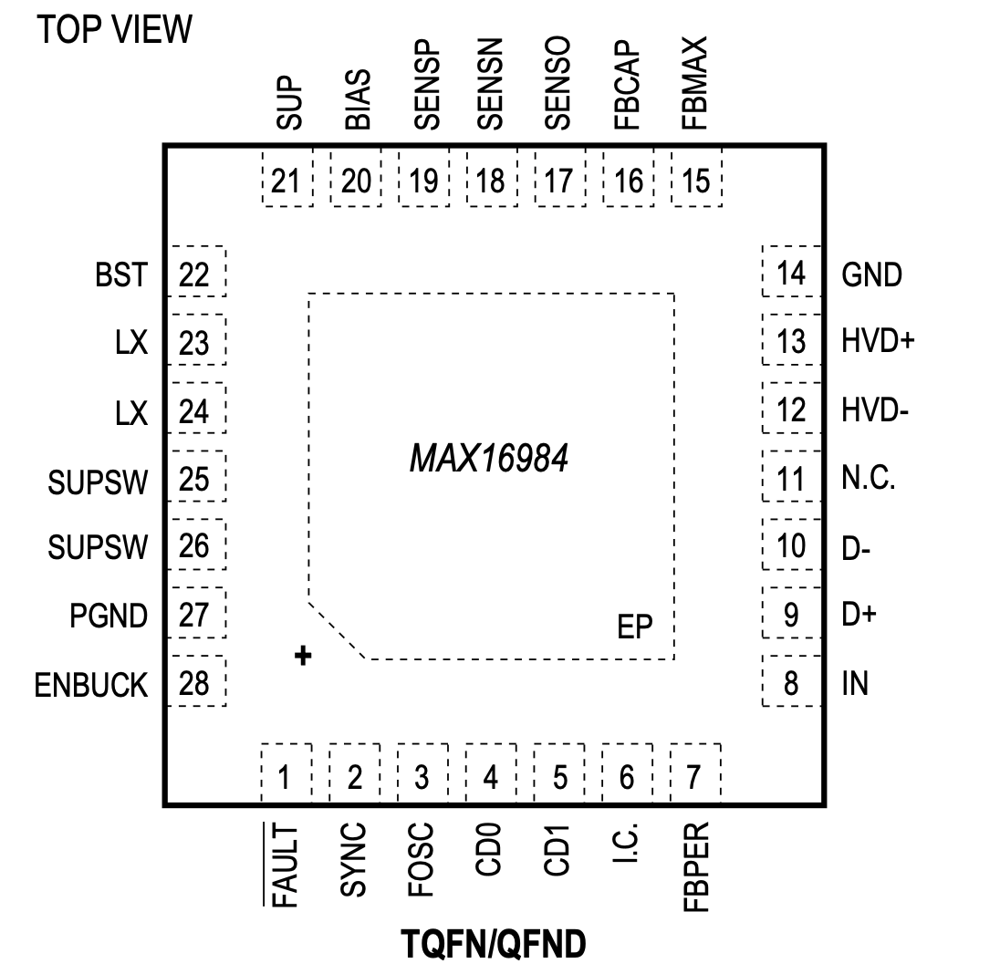
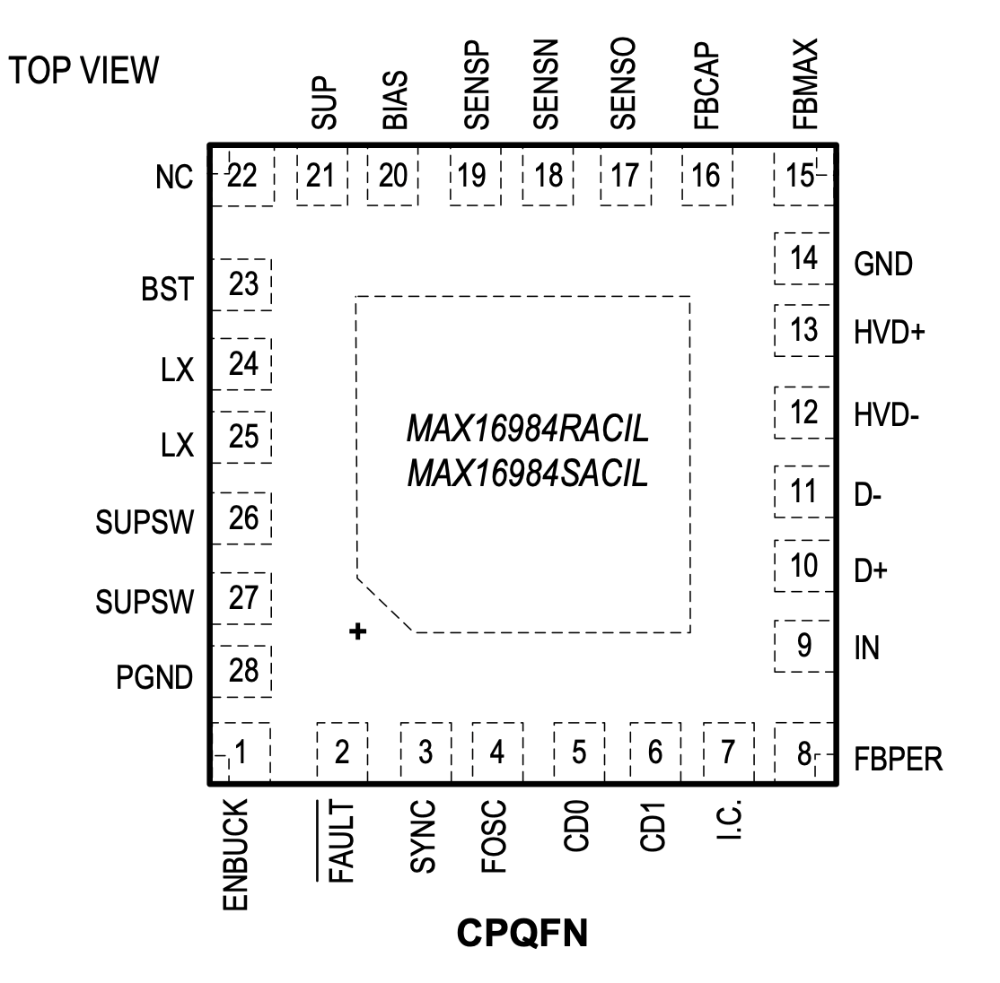

MAX16984

Pin Description
| PIN | NAME | FUNCTION |
|---|---|---|
| 1 | FAULT | Active-Low Open-Drain Fault Indicator Output. Connect a 100kΩ pullup resistor to IN. |
| 2 | SYNC | Synchronization Input. The device synchronizes to an external signal applied to SYNC. When connected to GND or unconnected, skip mode is allowed under light loads. See Table 1. When connected to a clock source or IN, forced-PWM (FPWM) mode is enabled. |
| 3 | FOSC | Resistor-Programmable Switching-Frequency Setting Control Input. Connect a resistor from FOSC to GND to set the switching frequency. |
| 4 | CD0 | Charger Detection Configuration Bit 0 |
| 5 | CD1 | Charger Detection Configuration Bit 1 |
| 6 | I.C. | Internal Connection. Must be connected to external GND. |
| 7 | FBPER | Digital Input. Used to select voltage feedback adjustment percentage. |
| 8 | IN | Logic Enable Input. Connect to I/O voltage of USB transceiver. IN is also used for clamping during overvoltage events on HVD+ or HVD-. Connect a 1µF ceramic capacitor from IN to GND. |
| 9 | D+ | USB Differential Data D+ Input. Connect D+ to low-voltage USB transceiver D+ pin. |
| 10 | D- | USB Differential Data D- Input. Connect D- to low-voltage USB transceiver D- pin. |
| 11 | N.C. | No Connection |
| 12 | HVD- | High-Voltage-Protected USB Differential Data D- Output. Connect HVD- directly to the USB connector D- pin. |
| 13 | HVD+ | High-Voltage-Protected USB Differential Data D+ Output. Connect HVD+ directly to the USB connector D+ pin. |
| 14 | GND | Analog Ground |
| 15 | FBMAX | Current-Sense Amp Output. Connect a resistor and capacitor to GND to set the voltage-adjustment bandwidth and the USB DC current level at which maximum voltage-feedback adjustment is reached. |
| 16 | FBCAP | External Capacitor Connection. Connect a 10pF capacitor to GND. |
| 17 | SENSO | Current-Sense Amp Output. Connect a resistor and capacitor to GND to set the maximum USB DC current limit. |
| 18 | SENSN | Current-Sense Amp Negative Input. Connect to negative terminal of current-sense resistor. |
| 19 | SENSP | DC-DC Converter Feedback Input and Current-Sense Amp Positive Input. Connect to positive terminal of current-sense resistor and the main output of the converter. Used for internal voltage regulation loop. |
| 20 | BIAS | 5V Linear Regulator Output. Connect a 1µF ceramic capacitor from BIAS to GND. BIAS powers up the internal circuitry. |
| 21 | SUP | Voltage Supply Input. SUP is the supply pin for the internal linear regulator. Connect a minimum of 4.7µF capacitor from SUP to GND close to the IC. |
| 22 | BST | High-Side Driver Supply. Connect a 0.1µF capacitor from BST to LX. |
| 23,24 | LX | Inductor Connection. Connect a rectifying Schottky diode between LX and GND. Connect an inductor from LX to the DC-DC converter output (SENSP). |
| 25,26 | SUPSW | Internal High-Side Switch-Supply Input. SUPSW provides power to the internal switch. Connect a 4.7µF ceramic capacitor in parallel with a 47µF capacitor from SUPSW to PGND. See the DC-DC Input Capacitor Selection section. |
| 27 | PGND | Power Ground |
| 28 | ENBUCK | Battery-Compatible Enable Input. Drive ENBUCK low/high to disable/enable the switching regulator. |
| - | EP | Exposed Pad. Connect EP to a large-area contiguous copper ground plane for effective power dissipation. Do not use as the only IC ground connection. EP must be connected to GND. |
MAX16984RACIL / MAX16984SACIL

Pin Description
| PIN | NAME | FUNCTION |
|---|---|---|
| 2 | FAULT | Active-Low Open-Drain Fault Indicator Output. Connect a 100kΩ pullup resistor to IN. |
| 3 | SYNC | Synchronization Input. The device synchronizes to an external signal applied to SYNC. When connected to GND or unconnected, skip mode is allowed under light loads. See Table 1. When connected to a clock source or IN, forced-PWM (FPWM) mode is enabled. |
| 4 | FOSC | Resistor-Programmable Switching-Frequency Setting Control Input. Connect a resistor from FOSC to GND to set the switching frequency. |
| 5 | CD0 | Charger Detection Configuration Bit 0 |
| 6 | CD1 | Charger Detection Configuration Bit 1 |
| 7 | I.C. | Internal Connection. Must be connected to external GND. |
| 8 | FBPER | Digital Input. Used to select voltage feedback adjustment percentage. |
| 9 | IN | Logic Enable Input. Connect to I/O voltage of USB transceiver. IN is also used for clamping during overvoltage events on HVD+ or HVD-. Connect a 1µF ceramic capacitor from IN to GND. |
| 10 | D+ | USB Differential Data D+ Input. Connect D+ to low-voltage USB transceiver D+ pin. |
| 11 | D- | USB Differential Data D- Input. Connect D- to low-voltage USB transceiver D- pin. |
| 22 | N.C. | No Connection |
| 12 | HVD- | High-Voltage-Protected USB Differential Data D- Output. Connect HVD- directly to the USB connector D- pin. |
| 13 | HVD+ | High-Voltage-Protected USB Differential Data D+ Output. Connect HVD+ directly to the USB connector D+ pin. |
| 14 | GND | Analog Ground |
| 15 | FBMAX | Current-Sense Amp Output. Connect a resistor and capacitor to GND to set the voltage-adjustment bandwidth and the USB DC current level at which maximum voltage-feedback adjustment is reached. |
| 16 | FBCAP | External Capacitor Connection. Connect a 10pF capacitor to GND. |
| 17 | SENSO | Current-Sense Amp Output. Connect a resistor and capacitor to GND to set the maximum USB DC current limit. |
| 18 | SENSN | Current-Sense Amp Negative Input. Connect to negative terminal of current-sense resistor. |
| 19 | SENSP | DC-DC Converter Feedback Input and Current-Sense Amp Positive Input. Connect to positive terminal of current-sense resistor and the main output of the converter. Used for internal voltage regulation loop. |
| 20 | BIAS | 5V Linear Regulator Output. Connect a 1µF ceramic capacitor from BIAS to GND. BIAS powers up the internal circuitry. |
| 21 | SUP | Voltage Supply Input. SUP is the supply pin for the internal linear regulator. Connect a minimum of 4.7µF capacitor from SUP to GND close to the IC. |
| 22 | BST | High-Side Driver Supply. Connect a 0.1µF capacitor from BST to LX. |
| 24,25 | LX | Inductor Connection. Connect a rectifying Schottky diode between LX and GND. Connect an inductor from LX to the DC-DC converter output (SENSP). |
| 26,27 | SUPSW | Internal High-Side Switch-Supply Input. SUPSW provides power to the internal switch. Connect a 4.7µF ceramic capacitor in parallel with a 47µF capacitor from SUPSW to PGND. See the DC-DC Input Capacitor Selection section. |
| 28 | PGND | Power Ground |
| 1 | ENBUCK | Battery-Compatible Enable Input. Drive ENBUCK low/high to disable/enable the switching regulator. |
| - | EP | Exposed Pad. Connect EP to a large-area contiguous copper ground plane for effective power dissipation. Do not use as the only IC ground connection. EP must be connected to GND. |